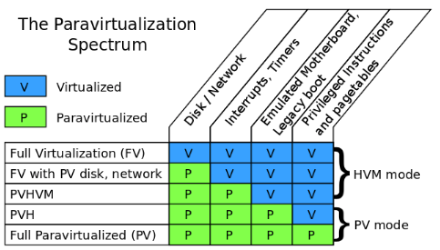

Basic Concepts
Xen Achitecture
https://wiki.xen.org/wiki/Virtualization_Spectrum#Xen_and_paravirtualization

Full virtualization
A question of the original Xen research project at Cambridge University was, “What if instead of trying to fool the guest kernel into thinking it’s running on real hardware, you just let the guest know that it was running in a virtual machine, and changed the interface you provide to make it easier to implement?”. Then we got the paravirtualization. In a paravirtualized VM, guests run with fully paravirtualized disk, network, interrupts and timers; there is no emulated motherboard or device bus; guests boot directly into the kernel in the mode the kernel wishes to run in (32-bit or 64-bit), without needing to start in 16-bit mode or go through a BIOS; all privileged instructions are replaced with paravirtualized equivalents (hypercalls), and access to the page tables was paravirtualized as well.Xen and full virtualization
HVM — which stands for “hardware virtual machine”. Technically speaking, HVM refers to a set of extensions that make it much simpler to virtualize one component: the processor. To run a fully virtualized guest, many other components still need to be virtualized. To accomplish this, the Xen project integrated qemu to emulate disk, network, motherboard, and PCI devices; wrote the shadow code, to virtualize the pagetables; wrote emulated interrupt controllers in Xen; and integrated ROMBIOS to provide a virtual BIOS to the guest.Problems with paravirtualization: AMD and x86-64
Most modern operating systems need just two levels of protection: user mode and kernel mode. Kernel mode memory is protected from user mode memory via the pagetable “supervisor mode” bit. When running a virtual machine, you need at least three levels of protection: user mode, guest kernel, and hypervisor. The hypervisor memory needs to be protected from the guest kernel, and the guest kernel memory needs to be protected from the user. The pagetable protections only provide two levels of protection, so Xen uses another processor feature, called a segmentation limit, to provide the third level of protection. Segmentation limits are a processor feature that was in common use before paging was available. But since paging has been available, segmentation limits have basically not been used; The pagetable protections protect both the guest kernel and Xen from userspace; the segmentation limits protect Xen from the guest kernel. Unfortunately, AMD desinged their 64-bit extensions to the x86 architecture. Since basically no operating systems use segmentation limits, AMD decided to get rid of them. This may have greatly simplified the architecture for AMD, but it made it impossible for Xen to squeeze in 3 levels of protection into the same address space. Instead, for 64-bit PV guests, both guest kernel and guest user-space need to run in ring 3, each with their own address space. Every time a guest process needs to make a system call, it has to bounce up into Xen, which will context- switch to the guest kernel. This not only takes more time for each system call, but requires flushing tlb per systemcall (a context switch is required here). In 64-bit HVM mode, the problem doesn’t occur. The HVM extensions make it easy to have three different protection levels without needing to play clever tricks with little-used processor features. So making system calls in 64-bit HVM mode is just as fast as on real hardware. For this reason, a lot of people began running 64-bit Linux in fully virtualized mode.PVHVM mode to PVH mode
In fully virtualized mode, even with PV drivers, has a number of things that are unnecessarily inefficient. One example is the interrupt controllers: fully virtualized mode provides the guest kernel with emulated interrupt controllers (APICs and IOAPICs). Each instruction that interacts with the APIC requires a trip up into Xen and a software instruction decode; and each interrupt delivered requires several of these emulations. PVHVM mode was introduced by Stefano Stabellini, the disk and network are paravirtualized, as are interrupts and timers, to minimize traps into the hypervisor.Privileged instructions are virtualized using the HVM extensions, and pagetables are fully virtualized, using either shadow pagetables, or the hardware assisted paging (HAP) available on more recent AMD and Intel processors.But the guest still boots with an emulated motherboard, PCI bus, and so on. It also goes through a legacy boot, starting with a BIOS and then booting into 16-bit mode. PVHVM mode allows 64-bit guests to run at near native speed, taking advantage of both the hardware virtualization extensions and the paravirtualized interfaces of Xen. But it still leaves something to be desired. For one, it still requires the overhead of an emulated BIOS and legacy boot. Secondly, it requires the extra memory overhead of a qemu instance to emulate the motherboard and PCI devices. A lot of the choices Xen made when designing a PV interface were made before HVM extensions were available. Nearly all hardware now has HVM extensions available, and nearly all also include hardware-assisted pagetable virtualization. What if we could run a fully PV guest — one that had no emulated motherboard, BIOS, or anything like that — but used the HVM extensions to make the PV MMU unnecessary, as well as to speed up system calls in 64-bit mode? This is exactly what Mukesh’s PVH mode is. It’s a fully PV kernel mode, running with paravirtualized disk and network, paravirtualized interrupts and timers, no emulated devices of any kind (and thus no qemu), no BIOS or legacy boot — but instead of requiring PV MMU, it uses the HVM hardware extensions to virtualize the pagetables, as well as system calls and other privileged operations.What about KVM?
Strictly speaking, KVM is just a set of kernel extensions designed to help processes implement virtualization. When most people speak of using KVM, they mean “qemu-kvm”, which means qemu running configured to use the KVM extensions. KVM supports both “legacy boot”, starting in 16-bit mode with a BIOS (or EFI) to load the kernel bootloader, and booting directly into a kernel passed on the qemu command-line. It also provides an emulated motherboard, PCI bus, and so on. It can provide both emulated disk and network cards; and thus it is capable of supporting guests running in fully virtualized mode. KVM does not have a paravirtualized interface for timers or interrupts; instead (if I understand correctly) it uses an emulated local APIC. Handling a full interrupt cycle for an emulated local APIC typically requires several MMIO accesses, each of which requires a context switch and an instruction emulation. The Xen PV interrupt interface is based on memory shared with the hypervisor, supplemented by hypercalls when necessary; so most operations can be done without context switches, and those that do require only a single context switch (and no instruction emulation). KVM has paravirtualized devices and a paravirtualized clock, but not paravirtualized interrupts
The basic scheudle unit in Xen VMM is vcpu entity.
+----------+ +----------+ +----------+
| | | | | |
| | | | | |
| dom0 | | guest | | guest |
| | | | | |
| | | | | |
| | | | | |
+----------+ +----------+ +----------+
vcpu0 vcpu1 vcpu2 vcpu3
+------------------------------------------+
| vcpu scheduling |
| \/ |
| /\EN VMM |
+------------------------------------------+
+----+ +----+
|CPU0| |CPU1|
+----+ +----+
This is very different from kvm.In kvm, after install the kvm module, the kernel itself become a VMM. The vcpu is a thread created by the qemu. The vcpu threads are scheduled as a regular threads in linux kernel.How to do the schedule ?
schedule()
-> sched->do_schedule()
// return a task_slice, .task is the next vcpu, .time is the time slice of the vcpu.
-> set_timer(&sd->timer, now + next_slice.time)
// This timer will raise SCHEDULE_SOFTIRQ, its handler is schedule().
-> next = next_slice.task //task is a vcpu
-> context_switch()
-> __context_switch()
// _important_ thing here is to change the guest_cpu_user_regs().
// First, save the original one to prev->arch.user_regs, then restore the
// next->arch.user_regs. At the same time, the cr3 will be updated here
// by write_ptbase(). The cr3 is used to save the page directory base.
-> nextd->arch.ctxt_switch->tail(next);
-> vmx_do_resume()
-> load vmcs or some other
-> reset_stack_and_jump(vmx_asm_do_vmentry)
#define reset_stack_and_jump(__fn) \
({ \
__asm__ __volatile__ ( \
"mov %0,%%"__OP"sp;" \
CHECK_FOR_LIVEPATCH_WORK \
"jmp %c1" \
: : "r" (guest_cpu_user_regs()), "i" (__fn) : "memory" ); \
unreachable(); \
})
The pointer returned by guest_cpu_user_regs() is set to sp register.
Then jump to vmx_asm_do_vmentry()
ENTRY(vmx_asm_do_vmentry)
GET_CURRENT(bx)
jmp .Lvmx_do_vmentry
In .Lvmx_do_vmentry, there are some hooks such as .Lvmx_process_softirqs.
The most important instructions are:
>>>>
pop %r15
pop %r14
pop %r13
pop %r12
pop %rbp
mov %rax,%cr2
cmpb $0,VCPU_vmx_launched(%rbx)
pop %rbx
pop %r11
pop %r10
pop %r9
pop %r8
pop %rax
pop %rcx
pop %rdx
pop %rsi
pop %rdi
je .Lvmx_launch
/*.Lvmx_resume:*/
VMRESUME
jmp .Lvmx_vmentry_fail
.Lvmx_launch:
VMLAUNCH
>>>>
After this, it will trap into the non-root mode domain.
The boot cpu
__start_xen()
-> init_idle_domain()
-> scheduler_init()
-> reinit_bsp_stack()
-> init_done()
-> startup_cpu_idle_loop()
-> idle_loop()
Other cpus
start_secondary()
-> startup_cpu_idle_loop()
-> idle_loop()
The basic vcpu should be the one on where domain0 is running.
So, in the xen VMM, there should be on vcpu running at least.
__start_xen()
>>>>
dom0 = domain_create(0, domcr_flags, 0, &config);
if ( IS_ERR(dom0) || (alloc_dom0_vcpu0(dom0) == NULL) )
panic("Error creating domain 0");
>>>>
alloc_dom0_vcpu0()
-> dom0_setup_vcpu()
-> alloc_vcpu()
-> sched_init_vcpu()
-> SCHED_OP(dom_scheduler(d), insert_vcpu, v);
/* insert into the vcpu scheduler. */
__start_xen()
>>>>
if ( construct_dom0(dom0, mod, modules_headroom,
(initrdidx > 0) && (initrdidx < mbi->mods_count)
? mod + initrdidx : NULL,
bootstrap_map, cmdline) != 0)
panic("Could not set up DOM0 guest OS");
>>>>
construct_dom0()
-> dom0_construct_pvh()
-> pvh_setup_p2m()
-> pvh_load_kernel()
-> pvh_setup_cpus()
>>>>
vcpu_hvm_context_t cpu_ctx = {
.mode = VCPU_HVM_MODE_32B,
.cpu_regs.x86_32.ebx = start_info,
.cpu_regs.x86_32.eip = entry, // This is very important. !!!
.cpu_regs.x86_32.cr0 = X86_CR0_PE | X86_CR0_ET,
>>>>
};
cpu = v->processor;
for ( i = 1; i < d->max_vcpus; i++ )
{
const struct vcpu *p = dom0_setup_vcpu(d, i, cpu);
if ( p )
cpu = p->processor;
} // setup other vcpus for dom0
rc = arch_set_info_hvm_guest(v, &cpu_ctx); // The v here is the vcpu0 for dom0
/* Here, the vcpu->arch.user_regs will be setup, we know that it will be
loaded when this vcpu is scheduled.*/
>>>>
two questions here:
>>>>
if ( domid == 0 || domid == hardware_domid )
{
if ( hardware_domid < 0 || hardware_domid >= DOMID_FIRST_RESERVED )
panic("The value of hardware_dom must be a valid domain ID");
d->is_pinned = opt_dom0_vcpus_pin;
d->disable_migrate = 1;
old_hwdom = hardware_domain;
hardware_domain = d;
}
>>>>
__start_xen()
-> reinit_bsp_stack()
-> init_done()
-> domain_unpause_by_systemcontroller() //hardware_domain
-> domain_unpause()
-> vcpu_wake()
It will try to wake up every vcpu here, but because only the vcpu0 has been cleaned
_VPF_down flag by the construct_dom0(), so only vcpu0 could be wakeup here.
do_vcpu_op()
>>>>
case VCPUOP_up: {
bool_t wake = 0;
domain_lock(d);
if ( !v->is_initialised )
rc = -EINVAL;
else
wake = test_and_clear_bit(_VPF_down, &v->pause_flags);
domain_unlock(d);
if ( wake )
vcpu_wake(v);
break;
}
>>>>
The _VPF_down is set by alloc_vcpu().
We also could see how to pull down a vcpu.
>>>>
case VCPUOP_down:
if ( !test_and_set_bit(_VPF_down, &v->pause_flags) )
vcpu_sleep_nosync(v);
break;
>>>>